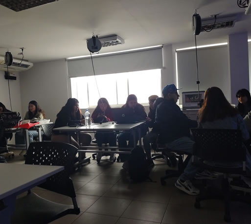
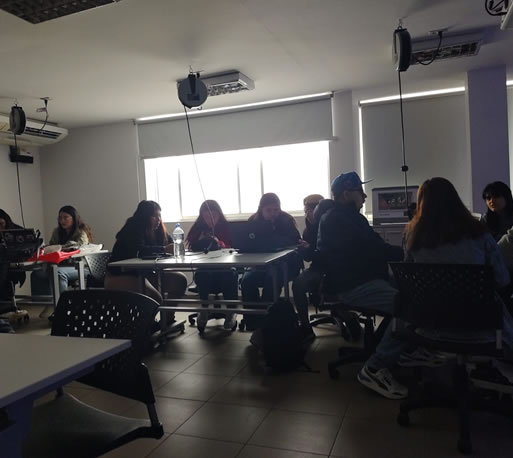
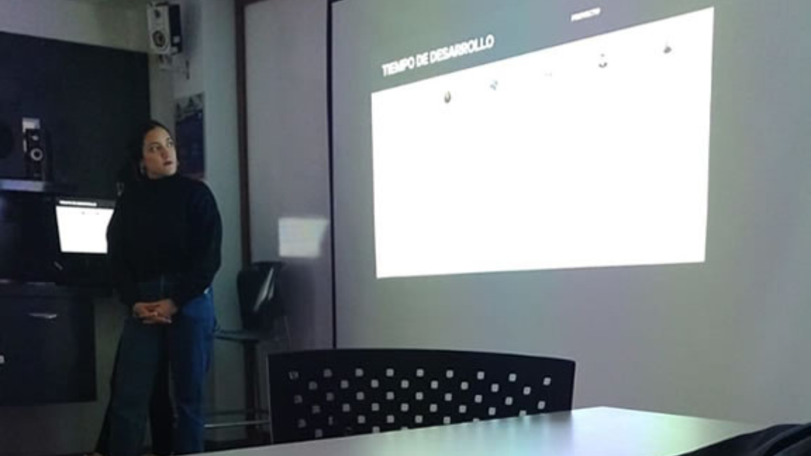
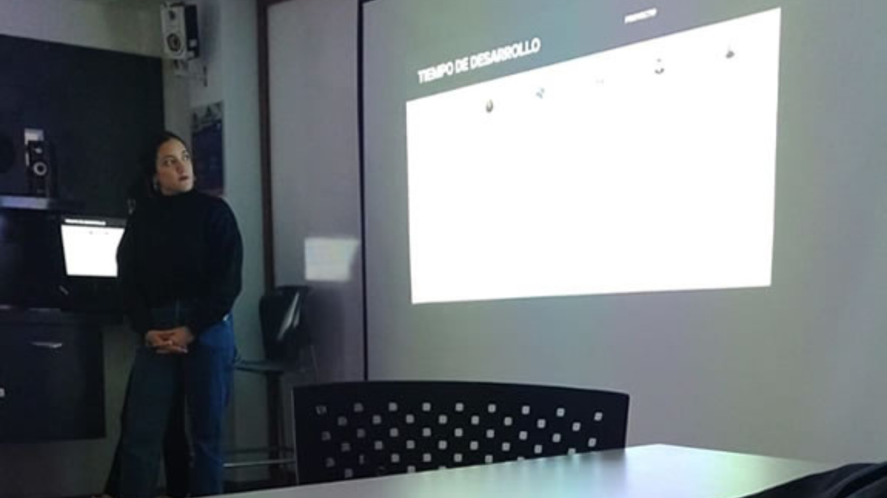
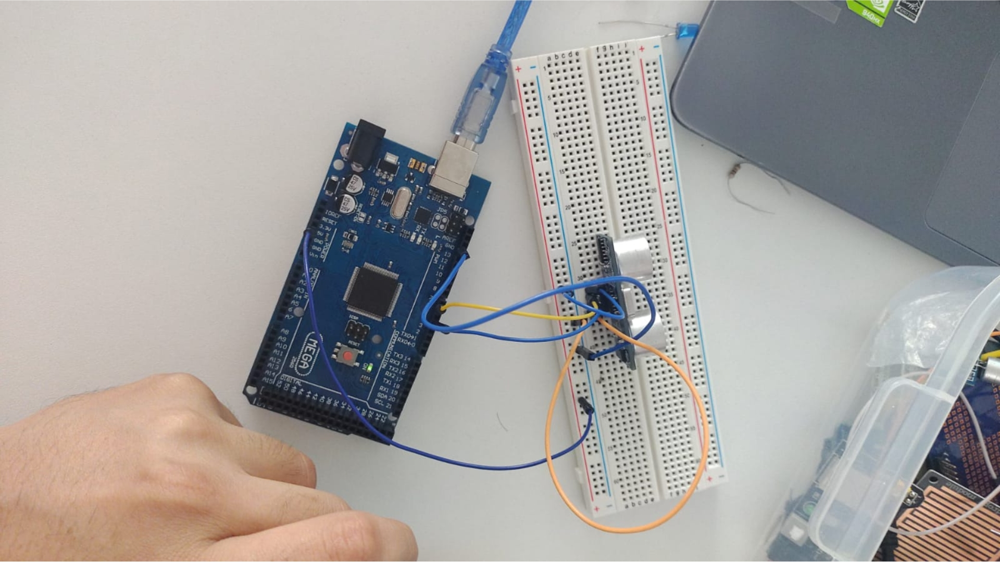
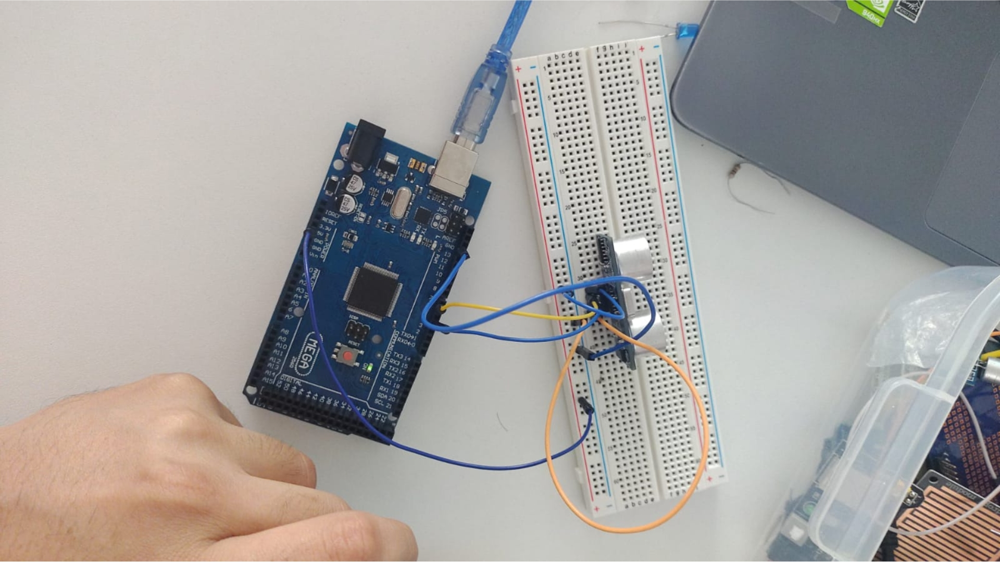

Bienvenidos a mi bitácora de Laboratorio de innovación 2,
aquí veras todos mis avances durante el ciclo.
 

Semana 1
En nuestra primera clase, todos nos presentamos uno por uno. Fue una especie de rompehielos donde compartimos quiénes somos, un poco de nuestra historia académica y algunos datos interesantes. Esto marcó el inicio del curso y nos ayudó a conocernos mejor.
Luego, el profesor nos explicó cómo calcularíamos nuestras calificaciones en el curso. Nos hizo hincapié en que la participación en clase sería súper importante, así que seguro estaré más activo en las próximas clases.
Después, el profesor nos puso a prueba con algunas preguntas sobre electricidad. Fue un reto, pero me hizo darme cuenta de cuánto sé y lo que todavía tengo que aprender.
Y finalmente, hicimos un trabajo grupal muy interesante. Teníamos que encontrar un problema relacionado con los Objetivos de Desarrollo Sostenible (ODS) y proponer una solución. Fue genial trabajar en equipo y pensar en cómo podemos contribuir a hacer del mundo un lugar mejor.

Semana 2
Durante la segunda semana de clases, nos llevamos una sorpresa cuando nuestro profesor anunció que nos sumergiríamos en la creación de una bitácora digital. Para ayudarnos a comprender la estructura que debíamos seguir, nos mostró los diferentes apartados que debíamos incluir en la bitácora y compartió ejemplos breves de bitácoras previamente creadas por antiguos estudiantes.
Después de esa aclaración, nuestro profesor nos presentó la herramienta que utilizaríamos para llevar a cabo esta aventura: "Visual Studio Code". Pero antes de lanzarnos al ruedo, nos brindó una exhaustiva introducción a la interfaz y nos familiarizó con las funciones esenciales de la herramienta, asegurándose de que nos sintiéramos confiados en su uso.
Una vez dentro de Visual Studio Code, nos guió a través de los pasos para insertar títulos, subtítulos, texto y añadir imágenes a nuestra bitácora. Fue emocionante descubrir cómo darle forma y contenido a nuestra creación digital, y nos dejó con ganas de explorar más.
Al aproximarse el final de la clase, nuestro profesor nos brindó un recurso valioso: una página repleta de plantillas que podríamos personalizar para diseñar nuestras propias bitácoras. Esta generosa ayuda simplificó en gran medida el proceso, ya que nos permitió partir de una base sólida y adaptarla a nuestras necesidades en lugar de construir la bitácora desde cero.s


Semana 3
Continuamos perfeccionando nuestra página web. Comenzamos por afinar los colores que usaríamos, tratando de encontrar la paleta perfecta que transmitiera la atmósfera que deseábamos para nuestro sitio. Fue un proceso creativo interesante, aunque a veces resultó un desafío elegir los tonos exactos.
Después de dedicar tiempo a los colores, pasamos a planificar la disposición de la sección de la bitácora. Queríamos asegurarnos de que la información se presentara de manera coherente y que los visitantes de la página pudieran navegar sin complicaciones. Fue sorprendente ver cómo pequeños cambios en la disposición podían tener un gran impacto en la usabilidad.
Luego, nuestro profesor nos introdujo al arte de redirigir las páginas entre sí. Nos enseñó a crear enlaces y botones que permitieran a los usuarios moverse de una parte a otra de la página con facilidad. Esto resultó ser un elemento crucial para que nuestra página web fuera más intuitiva y accesible.


Semana 4
Después, el profesor nos mostró cómo subir nuestras páginas web a Internet para que puedan ser compartidas con cualquiera. Fue genial aprender cómo hacer que nuestras creaciones estén al alcance de todos en la web.

 

Semana 5
Un día de revisión de las páginas web que hemos estado desarrollando a lo largo del primer semestre. Hubo muchas de ellas que me gustaron mucho por la forma en que las estructuraron.
Tambien tuvimos el día de presentar nuestras propuestas de proyectos en grupos. Cada equipo compartió detalles sobre lo que están trabajando, como los materiales, costos, cronograma y cómo funcionará su dispositivo. Después de cada presentación, el profesor nos dio recomendaciones para mejorar, sugiriendo cambios en la presentación, la adición de contenido o dando ejemplos de presentaciones exitosas y menos exitosas.


Semana 6
Esta semana, el profesor nos dio una introducción a los sistemas de control. Nos mostró ejemplos de sistemas de control que encontramos en nuestra vida cotidiana, y que, honestamente, algunos de nosotros no sabíamos que existían. Luego, nos introdujo a conceptos de electrónica, lo que nos permitió comprender mejor términos como voltaje, corriente, resistencia, conductancia, capacitancia, carga, potencia y otros conceptos relacionados. Fue una clase interesante para alguien como yo que no tenía mucho conocimiento previo en este tema.


 

Semana 7
Comenzamos con ya casi mitad de promedio 2 y en esta clase el profesor nos dio un breve repaso de lo que aprendimos en laboratorio 1.
Luego del breve repaso, nos comenzo a explicar mas afondo el "Arduino", ya sea sus "entradas y salidas digitales" y "entradas y salidas analogicas".
Nos explico como podria ser una configuracion de entrada del arduino para asi prender un led.
Entramos a el programa de "Arduino", nos enseño a como colocar que tipo de ardiuno escoger con el cual vamos a trabajar, luego pasamos a que nos enseñe algunas variables para que asi el dia sabado vayamos con cierto conocimiento y poner en
El dia sabado colocamos en practica todo lo aprendido en la clase virtual y la verdad estuvo muy diverto, muy buena esperiencia.


Semana 8
Nuestra clase comenzó con una introducción alucinante a las tecnologías CAD, CAE y CAM. Nuestro profesor nos mostró un panorama general de estos programas super sofisticados y nos contó para qué rayos sirven y en qué se utilizan. Fue como si nos abriera las puertas a un mundo secreto del diseño y la fabricación. En serio, el profe se lució explicando todo esto con mucha paciencia y conocimiento.
Luego, la cosa se puso emocionante cuando nos metimos de lleno en el universo de la impresión 3D. Nuestro profesor nos llevó de viaje a un mundo totalmente nuevo, y la verdad, parecía que las posibilidades eran infinitas. Nos enseñó cómo esta tecnología tan loca puede ser súper útil para nuestro proyecto grupal y nos dejó boquiabiertos con ejemplos de cómo se usa en la medicina, ingeniería y hasta en la arquitectura. La impresión 3D es como abrir una puerta a un montón de innovación y creatividad.
Después de toda esa información genial, el profe nos metió de lleno en el diseño 3D. Nos mostró uno de los programas top, llamado "AutoDesk Fusion 360". Con mucha paciencia, nos enseñó las diferentes partes del programa y nos explicó con lujo de detalle para qué sirve cada botón y comando. Nos mostró cómo convertir nuestras ideas tridimensionales en modelos digitales súper precisos y funcionales. La clase dejó nuestras cabezas llenas de ideas y expectativas para explorar este mundo alucinante del diseño.


Semana 9
Esta semana comenzamos con una pequeña actividad que realizo el profesor al incio de la clase. Nos comenzo a enseñar sobre la calidad, precision, altura de capa y las medidas que usaremos en clase para nuestras impresiones 3d.
Nos comentaba como son improtante los soportes, ya que si estos no estan, las impresiones de caerian.
Semana 10
Durante la segunda semana de clases, nos llevamos una sorpresa cuando nuestro profesor anunció que nos sumergiríamos en la creación de una bitácora digital. Para ayudarnos a comprender la estructura que debíamos seguir, nos mostró los diferentes apartados que debíamos incluir en la bitácora y compartió ejemplos breves de bitácoras previamente creadas por antiguos estudiantes.
Después de esa aclaración, nuestro profesor nos presentó la herramienta que utilizaríamos para llevar a cabo esta aventura: "Visual Studio Code". Pero antes de lanzarnos al ruedo, nos brindó una exhaustiva introducción a la interfaz y nos familiarizó con las funciones esenciales de la herramienta, asegurándose de que nos sintiéramos confiados en su uso.
Una vez dentro de Visual Studio Code, nos guió a través de los pasos para insertar títulos, subtítulos, texto y añadir imágenes a nuestra bitácora. Fue emocionante descubrir cómo darle forma y contenido a nuestra creación digital, y nos dejó con ganas de explorar más.
Al aproximarse el final de la clase, nuestro profesor nos brindó un recurso valioso: una página repleta de plantillas que podríamos personalizar para diseñar nuestras propias bitácoras. Esta generosa ayuda simplificó en gran medida el proceso, ya que nos permitió partir de una base sólida y adaptarla a nuestras necesidades en lugar de construir la bitácora desde cero.s